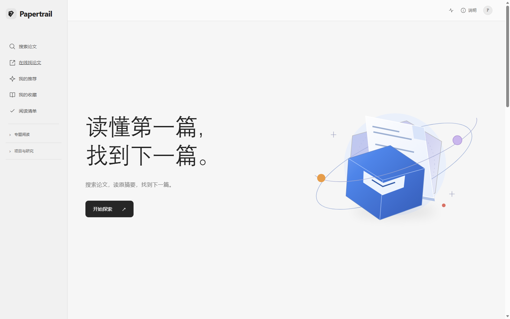
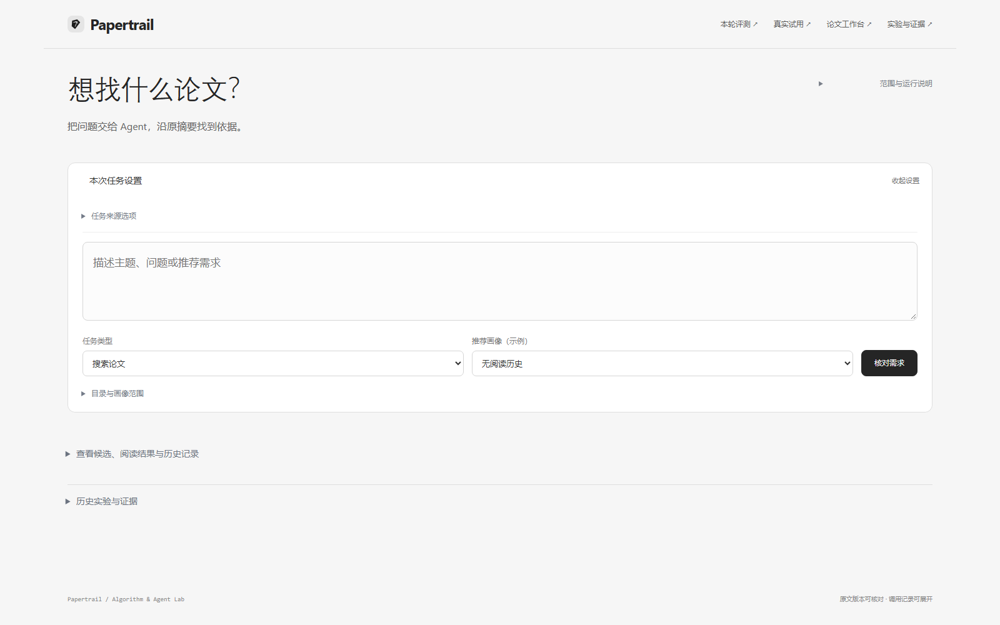
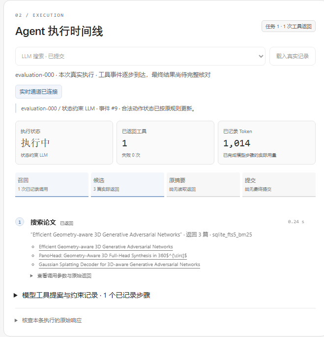

自己决定检索词
自定义任务的查询可以交给模型写，用户只给提示；模型写出的检索词会出现在决策记录里。
LOCAL-FIRST · AUDITABLE AGENT
167 篇论文的本地阅读站：搜索、收藏、读原摘要、内容推荐、备份。 旁边是一个基于冻结万篇目录的 LLM Agent 实验台：状态约束、动作预算、逐步事件、拒绝原因、来源核验。 所有推理都在本机完成，没有外部 LLM API。
真实运行截图，不是渲染稿。



自定义任务的查询可以交给模型写，用户只给提示；模型写出的检索词会出现在决策记录里。
检索返回后，读哪一篇由模型决定；读取预算 2 次，读过的论文才会进入可引用集合。
合法动作集合每一步由状态机计算：只能引用真正读过的论文，只能提交与已读数量一致的引用。
非法动作返回 reason= 码（29 种），且不计入 6 次动作预算；每一步的可用动作与选择都有记录。
用 lm-format-enforcer 强制工具调用的 JSON 信封，解析失败从每批 4 次降到 0。
任务完成后，用户点选 1–2 句原文，模型只根据这些句子作答；引用被固定，无法编造。
需要 Python 3.12。阅读站可以直接跑；Agent 实验台还需要受许可的数据与模型权重。
python -m venv .venv
.\.venv\Scripts\pip install -r deploy\stage66\requirements.lock -r deploy\stage66\api-requirements.lock
$env:PAPERTRAIL_LOCAL_PREVIEW = '1'
$env:PAPERTRAIL_DATA_DIR = '.\visitor-data'
$env:PORT = '8791'
.\.venv\Scripts\python -m scripts.run_research77_workbench然后打开 http://127.0.0.1:8791/，搜索 retrieval。